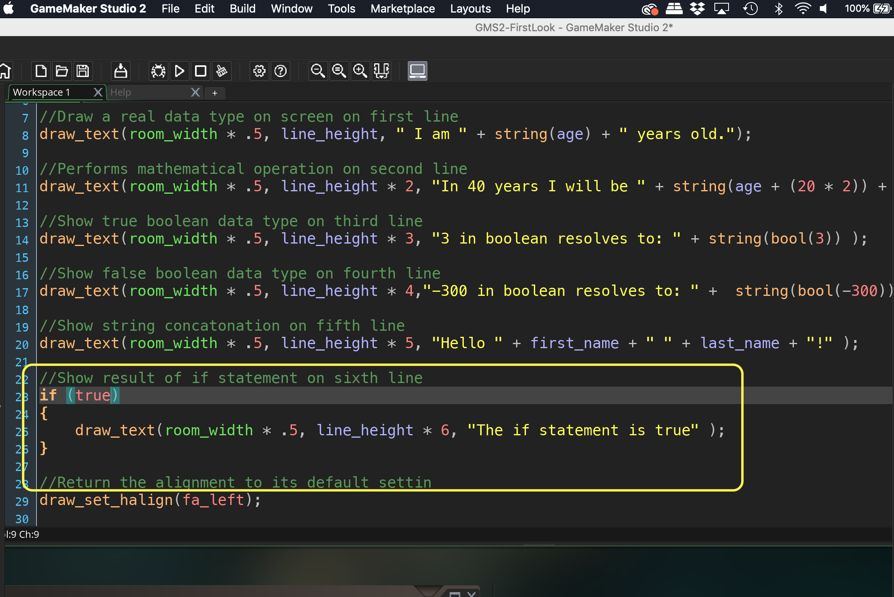
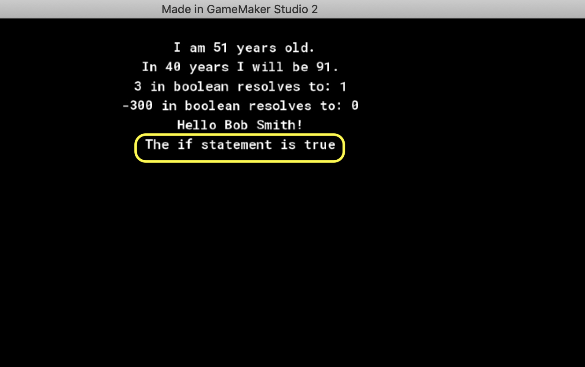
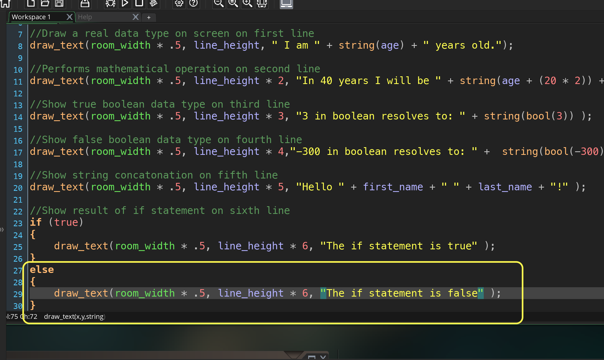
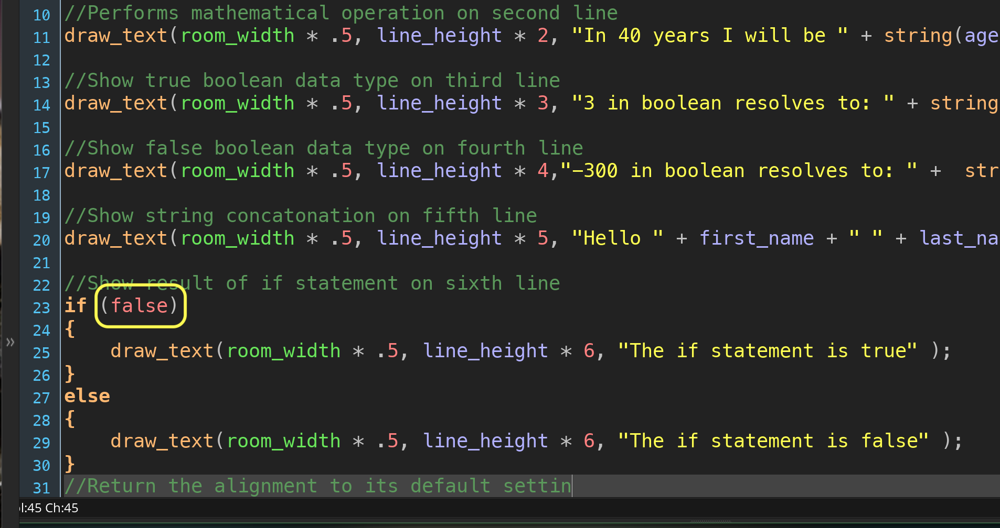
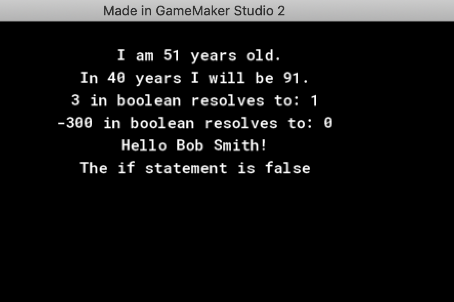
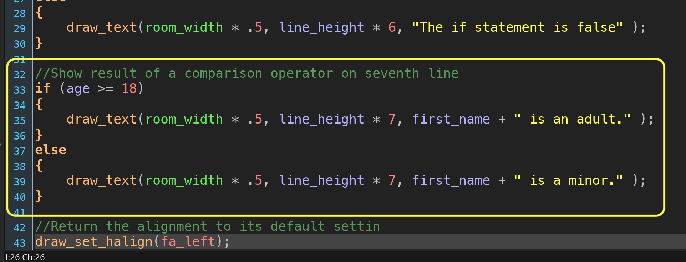
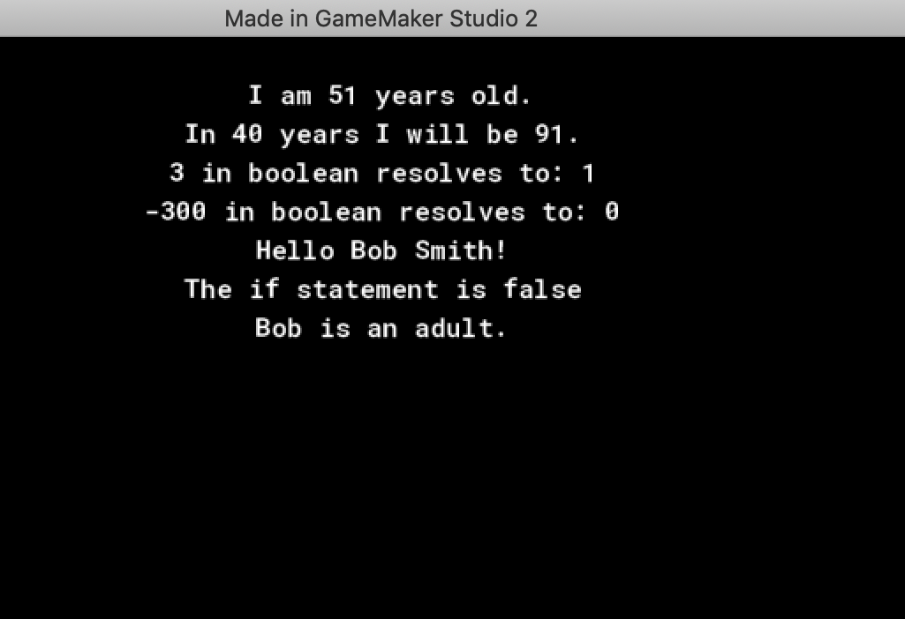
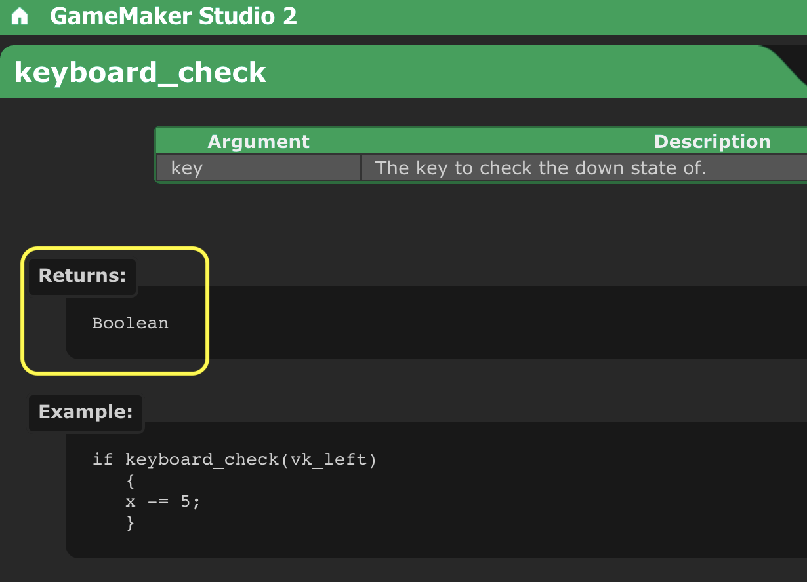
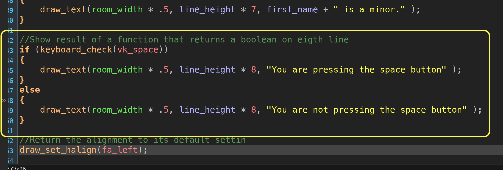
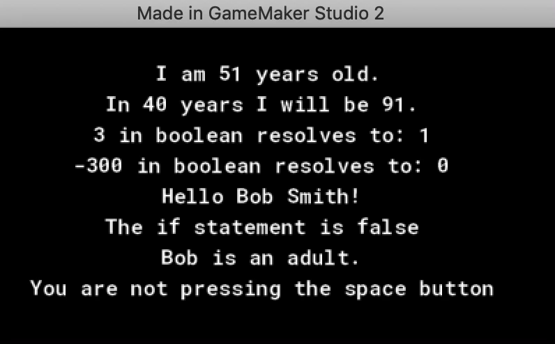

If you want to see tutorial in a separate web browswer window click here.
If Statements
We have looked at Variables, Functions and Data Types Now we are going to look at conditional if statements. This is used all of the time. One of the next times we will see it will be for determining user input. Has the user pressed a button on the keyboard? We use if statements to check this.
In pseudo code this is what we are checking to see if the expression in between brackets resolves to true or false. If the if statement is true then it runs what is between the bracket. An expression has to resolve to true or false (remember any real number over .5 resoles to true and all under it resolve to false).
if (expression)
{
//do something...
}
So as a sixth text printing we will be using a condition statement. As an expression we will just use true. True always resolves to true. We use curly braces as we might want to do multiple things based on that if statement. It will run all lines in-between the curly braces. So we can add:
//Show result of if statement on sixth line
if (true)
{
draw_text(room_width * .5, line_height * 6, "The if statement is true" );
}

Now run the game by pressing the  Play Button in the top menu bar to launch the game.Notice that it prints the message as the if statement resolved to true.
Play Button in the top menu bar to launch the game.Notice that it prints the message as the if statement resolved to true.

Now what happens if it resolves to false. What if we wanted to do something when the statement resolved to false? We can follow the if statement with an else statement. This will only run if the if statement resolves to false.
Note: Please be aware that you cannot put anything (except for a comment) between the last bracket from the if statement and the else. It will not compile.
if (expression)
{
//do something...
}
else
{
//do something else...
}
So lets add a different sentence for an else condition:
else
{
draw_text(room_width * .5, line_height * 6, "The if statement is false" );
}

Run the game again by pressing the  Play Button in the top menu bar to launch the game. Notice that it prints the same true message and not the false one.
Play Button in the top menu bar to launch the game. Notice that it prints the same true message and not the false one.
To see the false message you need to change the expression in parenthesis after the if statement to false.

Run the game again by pressing the  Play Button in the top menu bar to launch the game. Now the true message no longer displays but is replaced by the false one.
Play Button in the top menu bar to launch the game. Now the true message no longer displays but is replaced by the false one.

Lets look at a more practical expression. We will use a comparison operator. This compares two values and returns a true or false. The most common are:
- == (equals): checks if value on both sides of the operand are the same
- != (not equals): checks if value on both sides of the operand are different
- > (greather than): checks if value on the right hand operand is greater than the left had side
- < (greather than): checks if value on the right hand operand is less than the left had side
- >= (greather than or equal): checks if value on the right hand operand is greater than or equal to the left had side
- <= (greather than or equal): checks if value on the right hand operand is less than or equal the left had side
Lets add a seventh line that checks to see if the person with the age is an adult or not. We will use age >= 18 to do this.

Run the game again by pressing the  Play Button in the top menu bar to launch the game. Since I have age set to 51 I get the adult message as 51 is >= to 18.
Play Button in the top menu bar to launch the game. Since I have age set to 51 I get the adult message as 51 is >= to 18.

Lets add a eigth line that checks the return value of a function. Remember that functions can return a variable, some return booleans and are usually used inside if conditional statements. One of these in GameMaker is keyboard_check(key). You do not know what the return value of the function without looking in the manual. This can be done by typing the function name into the help index tab or clicking the above link. Look at the return value:

The manual also tells you about what arguments you need to pass to the function. In this case it is an enumerator of the key you want to check. If our case we will want to check the space key: vk_space. This function will return true every time the space button is held down and false if it is not.

Run the game again by pressing the  Play Button in the top menu bar to launch the game. Press the space bar and let go. The message should change accordingly:
Play Button in the top menu bar to launch the game. Press the space bar and let go. The message should change accordingly:

Next up we will look at loops.